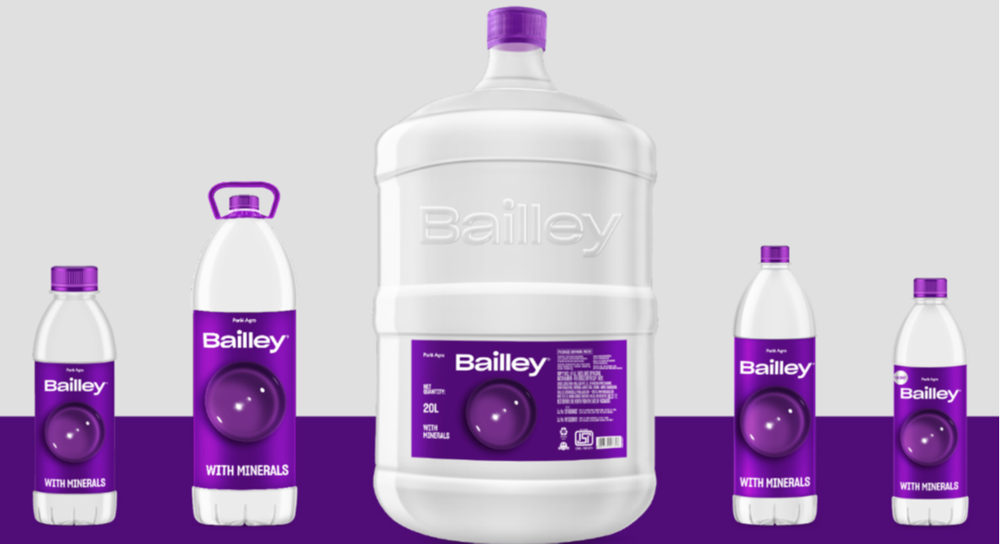

<section class="container mx-auto py-12">
    <div class="flex flex-wrap items-center justify-center"> <!-- Centering content -->
        <div class="w-full md:w-1/2 p-6">
            <h1 class="text-4xl text-slate-900 font-bold mb-2">WATER BOTTLE INSPECTION SYSTEM</h1>
            <p class="text-gray-700 mb-4">At Water Bottle Inspection System, we are dedicated to ensuring the
                quality and integrity of every bottle that passes through our inspection line. Our cutting-edge
                technology meticulously checks each bottle's label and cap integrity to maintain the highest
                standards of quality control.</p>
            <p class="text-gray-700 mb-4">With years of experience in the industry, our team of experts has
                developed a robust system that guarantees accuracy and efficiency. We understand the importance of
                delivering reliable inspection solutions to our clients in the beverage industry.</p>
            <p class="text-gray-700 mb-4">Our mission is to provide state-of-the-art inspection systems that help
                beverage manufacturers streamline their production processes and deliver products that meet the
                expectations of consumers worldwide.</p>
        </div>
        <div class=" w-full md:w-1/2 p-6">
            
        </div>
    </div>
</section>

